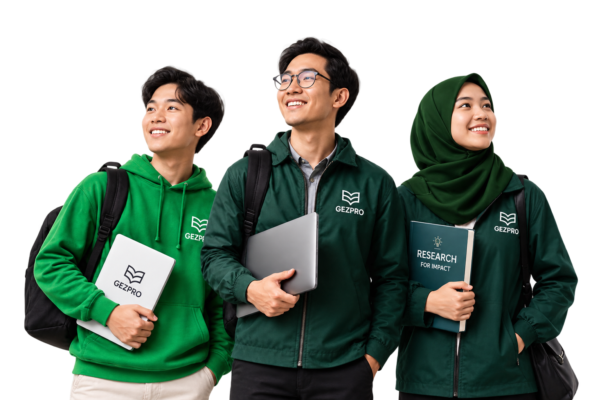
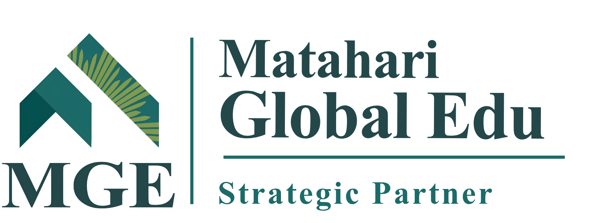

YOUR GLOBAL JOURNEY STARTS HERE
Punya Mimpi Kuliah ke Luar Negeri, Tapi Bingung Harus Mulai dari Mana?
GEZPRO membantu kamu menemukan jurusan, negara, beasiswa, dan persiapan yang sesuai dengan profilmu.
±2 MenitProses Cepat
GratisTanpa Biaya
PersonalHasil Sesuai Profilmu

Temukan arahmuMulai dari profilmu
Explore globallyOne step at a time
500+Siswa Berhasil Kuliah ke Luar Negeri
1.000+Database Beasiswa Global
6+Tahun Pengalaman Pendampingan
COLLABORATION & ECOSYSTEM
Mitra Strategis GEZPRO
Kolaborasi untuk mendukung perluasan akses dan kesempatan pendidikan global.

MITRA STRATEGIS GEZPROYOUR JOURNEY, YOUR PACE
Kamu Sekarang Ada di Tahap Mana?
Setiap orang memiliki titik awal yang berbeda. Kenali tahapmu dalam perjalanan menuju studi ke luar negeri.
Masih Mencari Arah
Kamu punya mimpi kuliah ke luar negeri, tetapi masih bingung memilih jurusan, negara, atau beasiswa.
Mulai Menentukan Tujuan
Kamu mulai memiliki gambaran jurusan atau negara tujuan, tetapi masih perlu memastikan pilihan yang sesuai.
Sedang Mempersiapkan Diri
Kamu sudah memiliki target dan ingin mengetahui persiapan yang perlu dilakukan.
Siap Menyusun Aplikasi
Kamu ingin menyusun langkah pendaftaran universitas atau beasiswa secara lebih terarah.
KENALI DIRIMU, TEMUKAN ARAHMU
Setiap Mimpi Punya Jalannya. Temukan yang Sesuai dengan Dirimu.
Kamu tidak harus memiliki semua jawaban sekarang. Memahami minat dan tujuanmu bisa menjadi langkah awal untuk mengeksplorasi pilihan studi yang relevan.
PROFILE CHECKER GEZPRO
Kenali Profilmu. Temukan Jalur Studimu.
Jawab beberapa pertanyaan singkat untuk mulai mengeksplorasi profil dan pilihan jalur studimu.
✓ Kenali posisi dan kesiapanmu
✓ Temukan hal yang perlu dipersiapkan
✓ Dapatkan gambaran jalur studi
±2 menit · Gratis · Hasil sesuai profilmu
Animasi di samping adalah preview visual, bukan hasil asesmen pribadi.
✦ Personalized
✓ Explore your study path
GEZPRO
01 / 07
Kenali Dirimu
Kamu sekarang berada di jenjang apa?
PROGRAM GEZPRO
Temukan Program yang Sesuai dengan Kebutuhanmu
Pilih bentuk pendampingan yang mendukung perjalanan pendidikan dan persiapanmu menuju studi ke luar negeri.
PROGRAM UTAMAMOST VALUE
Global Study Abroad
Pendampingan personal untuk membantu kamu menentukan arah studi, memetakan universitas dan beasiswa, serta mempersiapkan aplikasi.
- 10x Sesi Konsultasi1-on-1 bersama mentor
- University & Scholarship MappingMinimal 10 pilihan gabungan yang relevan
- Personalized DirectionArahan sesuai profil dan targetmu
- Application SupportPendampingan persiapan aplikasi hingga submission
IELTS Preparation Class
Persiapan kemampuan bahasa Inggris.
SAT Preparation Class
Persiapan tes SAT.
School Partnership
Program kerja sama untuk sekolah yang ingin membuka akses informasi dan pendampingan pendidikan global bagi siswanya.
Diskusikan Kerja SamaVALUE & WHY GEZPRO
Bukan Sekadar Mencari Beasiswa. Temukan Jalur yang Tepat untuk Masa Depanmu.
GEZPRO membantu membuka akses, menemukan arah, membangun kesiapan, dan melangkah percaya diri menuju pendidikan global.
Buka Lebih Banyak Peluang
Kenali berbagai peluang pendidikan global, universitas, dan beasiswa yang dapat kamu eksplorasi.
ACCESSTahu Harus Melangkah ke Mana
Pahami profil, minat, dan tujuanmu sebagai dasar untuk menentukan arah studi yang relevan.
DIRECTIONSiapkan Diri untuk Mewujudkannya
Susun langkah persiapan dan bangun kesiapan untuk menghadapi proses pendaftaran studi.
PREPARATIONPergi untuk Bertumbuh. Kembali Membawa Dampak.
Pendidikan global bukan hanya tentang meraih gelar, tetapi juga tentang membangun karakter dan memberi manfaat bagi lingkungan.
CHARACTER & IMPACTTechnology & Ecosystem
Didukung ekosistem yang aman dan adaptif untuk membantu perjalanan pendidikanmu menjadi lebih terarah.
Karena Setiap Potensi Punya Jalannya Sendiri.
FAQ
Punya Pertanyaan?
Temukan jawaban untuk hal-hal yang sering ditanyakan tentang pendampingan GEZPRO.
Hubungi GEZPRO via WhatsAppApakah GEZPRO cocok untuk saya?
GEZPRO cocok untuk kamu yang ingin melanjutkan studi ke luar negeri, baik yang masih mencari arah maupun yang sudah memiliki target dan membutuhkan pendampingan persiapan aplikasi.
Saya belum tahu negara atau jurusan tujuan. Apakah GEZPRO bisa membantu?
Bisa. Melalui profiling di awal program, GEZPRO membantu kamu mengenali profil, minat, dan tujuan studimu sebagai dasar menentukan arah studi yang sesuai. Target jurusan atau negara juga dapat disesuaikan selama sesi konsultasi masih tersedia.
Apa saja yang didapatkan dalam Global Study Abroad?
Kamu mendapatkan 10x sesi konsultasi 1-on-1 bersama mentor, profiling di awal, pemetaan minimal 10 pilihan gabungan universitas dan/atau beasiswa yang relevan, catatan materi, rekaman sesi, arahan personal, serta pendampingan persiapan aplikasi hingga submission. Program memiliki masa aktif 3 tahun sejak diaktifkan.
Berapa kali saya bisa melakukan sesi konsultasi?
Program Global Study Abroad mencakup 10x sesi konsultasi 1-on-1 bersama mentor. Sesi dapat digunakan untuk profiling, pemetaan pilihan studi, persiapan, hingga pendampingan aplikasi. Penyesuaian target studi dapat dilakukan selama sesi konsultasi masih tersedia.
Berapa lama masa aktif Global Study Abroad?
Program memiliki masa aktif selama 3 tahun sejak diaktifkan. Selama masa aktif tersebut, kamu dapat menggunakan sesi konsultasi yang tersedia sesuai ketentuan program.
Apakah GEZPRO mendampingi pendaftaran kuliah dan beasiswa?
Ya. GEZPRO mendampingi persiapan aplikasi hingga tahap submission sesuai kebutuhan dan kesiapanmu. Bantuan pengurusan visa, pendampingan keberangkatan, dan pendampingan lanjutan setelah hasil penerimaan tidak termasuk dalam program.
Apakah GEZPRO menjamin saya mendapatkan beasiswa atau diterima di universitas?
Hasil akhir tidak bisa dipastikan atau dijamin karena keputusan penerimaan berada pada universitas atau penyelenggara beasiswa. GEZPRO berkomitmen mendampingi santri secara terarah melalui Dream Plan, Reality Plan, dan Safety Plan untuk menyusun tujuan utama, alternatif realistis, serta pilihan cadangan.
Bagaimana proses pendampingan di GEZPRO?
Prosesnya: Daftar → CS GEZPRO → Pembentukan Grup → Mentor → Siswa/Wali → Sesi Konsultasi. Profiling dilakukan satu kali di awal, kemudian pendampingan berjalan melalui sesi konsultasi 1-on-1 dan komunikasi selama program. Wali murid dapat dilibatkan sesuai kebutuhan.
YOUR NEXT CHAPTER STARTS HERE
Mimpimu Bisa Dimulai Hari Ini.
Tidak perlu menunggu sampai semuanya siap. Mulai dengan memahami kondisimu, temukan jalur yang sesuai, dan siapkan langkahmu menuju studi ke luar negeri bersama GEZPRO.